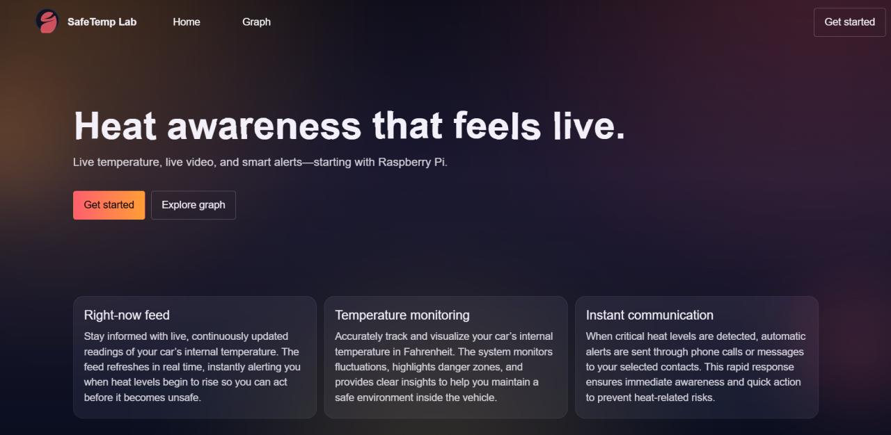

DEV DIARY // TRANSMISSION 03
WHEN TO TRUST A SINGLE THRESHOLD

Heat Aware's core loop is almost embarrassingly simple: poll a DS18B20, compare to a number, call Twilio if it's too hot. The temptation — especially with a Raspberry Pi and a MongoDB instance sitting right there — is to make it clever. Rolling averages. Rate-of-change. Humidity compensation. A little model. I didn't, and I've come to think that's the point.
The best safety system is the one whose behavior you can recite from memory at 3am.
WHERE IT HELPS
- A bare threshold is fully auditable — every alert maps to one reading above one number.
- Debugging is trivial: the Mongo log is the decision history.
- It fails predictably, and predictable failure is what you want in something that calls a caregiver's phone.
WHERE IT HURTS
- Sensor noise spikes fire false alarms — a single bad read at 41°C wakes someone up. Hysteresis is mandatory, not optional.
- A pure threshold has no concept of rate. A cabin climbing 2°C a minute is an emergency long before it crosses the line.
- "Configurable" is a lie until someone builds a UI. Right now the threshold lives in a config file only I understand.
For a one-sensor, one-phone system, the trade is obvious. The day I add a second sensor, or a second household, I'll reach for something stateful and windowed. Until then, a number and a phone call.